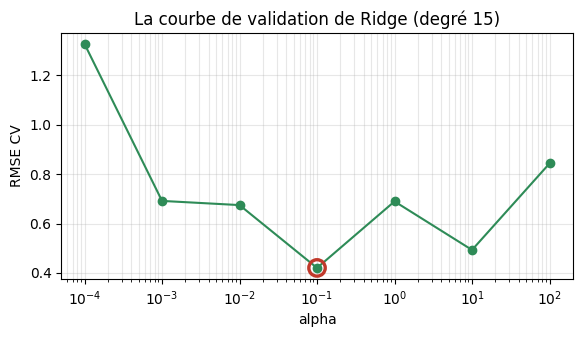

Valider et régler sans tricher : la validation croisée
Dr. El Hadji Bassirou TOURÉ · DMI · FST · UCAD
La Séance 6 a laissé deux curseurs en attente — le seuil et C — avec l’interdiction de les régler sur le test. Ce TP construit le protocole complet : la variance du découpage mesurée, la validation croisée refaite à la main (avec les équations normales de la Séance 5 dans chaque pli), cross_val_score, les courbes de validation, la double boucle de GridSearchCV vérifiée case par case, et le seuil du paludisme enfin réglé proprement par cross_val_predict.
Durée estimée : 1h30. Exécuter les cellules dans l’ordre, de haut en bas.
Partie 0 — Mise en place
import numpy as npimport pandas as pdimport matplotlib.pyplot as pltnp.set_printoptions(precision=4, suppress=True)pd.set_option("display.precision", 4)print("Outils prêts. NumPy", np.__version__, "· pandas", pd.__version__)
Lecture. AUC de \(0{,}688\) à \(0{,}704\) — une étendue de \(0{,}016\) sans qu’aucun choix de modélisation n’ait changé. Un score sur un split unique est une mesure bruitée : comparer deux recettes qui diffèrent de \(0{,}01\) sur un seul découpage, c’est comparer deux nombres dont le bruit propre dépasse l’écart observé.
Exercice. Sur un unique découpage, la recette A obtient \(0{,}72\) et la recette B \(0{,}73\). Au vu de l’étendue mesurée ci-dessus, écrire en commentaire si l’on peut déclarer B meilleure — puis vérifier l’intuition en évaluant la même logistique sur les random_states \(5\) à \(9\) et en affichant la nouvelle étendue.
# Cinq découpages supplémentaires (random_state 5 à 9) et leur étendue
Partie 2 — La validation croisée, à la main
Le jouet : \(x = (1,\dots,6)\), \(y = (2,2,4,5,5,7)\), trois plis consécutifs. À chaque tour, la droite est ajustée par les formules fermées de la Séance 5 sur les quatre points restants, puis notée (MSE) sur les deux points mis de côté.
tour 1 : valide sur [1 2], entraîne sur [3 4 5 6] -> b=1.200, w=0.900, MSE validation = 0.5050
tour 2 : valide sur [3 4], entraîne sur [1 2 5 6] -> b=0.500, w=1.000, MSE validation = 0.2500
tour 3 : valide sur [5 6], entraîne sur [1 2 3 4] -> b=0.500, w=1.100, MSE validation = 0.5050
verdict CV : moyenne = 0.4200 · écart-type = 0.1202
Lecture. Trois droites différentes — chaque tour apprend sur des données différentes — et trois MSE de validation. Le verdict : \(\text{CV}_3 = (0{,}505 + 0{,}250
+ 0{,}505)/3 = 0{,}42 \pm 0{,}12\). Et un clin d’œil : le tour \(3\), entraîné sur \(\{1,2,3,4\}\), retrouve exactement\(b = 0{,}5\), \(w = 1{,}1\) — le jouet de la Séance 5, mêmes données, même équation normale, même droite.
# Vérification : cross_val_score rend exactement les trois mêmes MSEfrom sklearn.model_selection import cross_val_scorefrom sklearn.linear_model import LinearRegressionscores = cross_val_score(LinearRegression(), xj.reshape(-1, 1), yj, cv=KFold(3, shuffle=False), scoring="neg_mean_squared_error")print("MSE par pli (sklearn) :", (-scores).round(4))print("moyenne :", (-scores).mean().round(4))assert np.allclose(sorted(-scores), sorted(mses))print("identiques aux calculs à la main — vérifié.")
MSE par pli (sklearn) : [0.505 0.25 0.505]
moyenne : 0.42
identiques aux calculs à la main — vérifié.
Lecture.cross_val_score ne fait rien de plus que la boucle écrite au-dessus : découper, entraîner \(k\) fois, noter \(k\) fois, rendre les \(k\) scores. La convention neg_mean_squared_error (signe inversé) existe pour que « plus grand = meilleur » dans tous les outils de sklearn.
Important : la CV n’élit aucune des trois droites. Elle note une recette ; le modèle final se réentraîne ensuite sur les six points.
Exercice. Refaire la validation croisée du jouet avec \(k = 2\) plis (KFold(2, shuffle=False)) via cross_val_score, et comparer la moyenne obtenue au \(0{,}42\) du \(k = 3\). Chaque tour n’entraîne plus que sur trois points : que devient le verdict ?
# CV à 2 plis sur le jouet, et comparaison avec k=3
Partie 3 — La stratification : la classe rare dans chaque pli
Sur une cible à \(11{,}8\,\%\) de positifs, un pli tiré au hasard peut être anormalement pauvre ou riche en malades — son verdict est faussé.
# Le découpage de référence du cours (celui des Séances 5 et 6)X_tr, X_te, y_tr, y_te = train_test_split(df[colonnes], df["paludisme"], test_size=0.2, random_state=42, stratify=df["paludisme"])print("train :", len(y_tr), "patients ·", int(y_tr.sum()), "positifs",f"({y_tr.mean():.4f})")
train : 8000 patients · 941 positifs (0.1176)
# Parts de positifs par pli : KFold contre StratifiedKFoldfrom sklearn.model_selection import StratifiedKFoldy_arr = y_tr.valuesfor nom, cv in [("KFold ", KFold(5, shuffle=True, random_state=0)), ("StratifiedKFold", StratifiedKFold(5, shuffle=True, random_state=0))]: parts = [y_arr[i_va].mean() for _, i_va in cv.split(np.zeros(len(y_arr)), y_arr)]print(nom, ":", np.round(parts, 4))
Lecture. Sans stratification, les plis vont de \(10{,}6\,\%\) à \(12{,}8\,\%\) de positifs : chaque tour juge un problème légèrement différent. StratifiedKFold impose la proportion globale à chaque pli. Règle du cours : classification \(\Rightarrow\) plis stratifiés, toujours.
# La CV de la logistique du paludisme, dans les règles de l'artpipe = make_pipeline(StandardScaler(), LogisticRegression(max_iter=1000, random_state=0))cv5 = StratifiedKFold(5, shuffle=True, random_state=0)scores = cross_val_score(pipe, X_tr, y_tr, cv=cv5, scoring="roc_auc")print("AUC par pli :", scores.round(4))print(f"verdict CV : {scores.mean():.4f} +/- {scores.std():.4f}")
AUC par pli : [0.7242 0.6778 0.6881 0.6791 0.6881]
verdict CV : 0.6914 +/- 0.0169
Lecture. Trois détails du code qui comptent : la recette passée est le Pipeline entier (la standardisation sera refaite à l’intérieur de chaque pli — la Partie 7 explique pourquoi c’est crucial) ; scoring="roc_auc" réutilise la métrique de la Séance 6 ; et seul l’entraînement entre dans la CV — le test n’a pas bougé de son coffre.
Partie 4 — Régler un curseur : la courbe de validation
Une note de CV par valeur candidate, et le réglage devient honnête. Premier client : l’\(\alpha\) de Ridge de la Séance 5, qui avait été choisi en regardant la validation.
# La courbe de validationplt.figure(figsize=(6.6, 3.2))plt.plot(list(rmse_cv.keys()), list(rmse_cv.values()), "o-", color="#2E8B57")plt.scatter([meilleur_alpha], [rmse_cv[meilleur_alpha]], s=140, facecolors="none", edgecolors="#C0392B", lw=2.4, zorder=5)plt.xscale("log"); plt.xlabel("alpha"); plt.ylabel("RMSE CV")plt.title("La courbe de validation de Ridge (degré 15)"); plt.grid(alpha=0.3, which="both")plt.show()

# Le protocole en trois temps : régler par CV, réentraîner, juger UNE foisfrom sklearn.metrics import mean_squared_errorm = make_pipeline(PolynomialFeatures(15), StandardScaler(), Ridge(alpha=meilleur_alpha))m.fit(xs_tr.reshape(-1, 1), ys_tr)rmse_final = np.sqrt(mean_squared_error(ys_va, m.predict(xs_va.reshape(-1, 1))))print("verdict final sur les 20 points jamais vus : RMSE =", round(rmse_final, 4))
verdict final sur les 20 points jamais vus : RMSE = 0.3358
Lecture. La CV retrouve \(\alpha = 0{,}1\) — le choix que la Séance 5 avait fait en trichant (en regardant la validation) est ici retrouvé sans tricher, et le verdict final (\(0{,}336\)) tombe sur des points que tout le protocole de réglage ignorait. Au passage : la courbe a une petite bosse à \(\alpha = 1\) — avec \(30\) points, la CV reste bruitée ; la tendance se lit, les bosses ne se surinterprètent pas.
# Deuxième client : la profondeur de l'arbre sur la durée d'hospitalisationfrom sklearn.tree import DecisionTreeRegressorXr_tr, Xr_te, yr_tr, yr_te = train_test_split(df[colonnes], df["duree_hospit_j"], test_size=0.2, random_state=42)for d in [2, 3, 4, 5, 6, 7, 8, 10, 12]: sc = cross_val_score(DecisionTreeRegressor(max_depth=d, random_state=0), Xr_tr, yr_tr, cv=5, scoring="r2")print(f"profondeur {d:2d} : R2 CV = {sc.mean():.4f} (+/- {sc.std():.4f})")
Lecture. Le \(R^2\) monte jusqu’à la profondeur \(6\) (\(0{,}563\)), plafonne, puis s’effondre (\(0{,}36\) à \(12\)) : le U inversé du compromis. La Séance 5 avait découvert le sur-apprentissage de la profondeur \(10\)après coup, sur le test ; la CV le voit à l’avance, sans dépenser le test.
Exercice. Tracer la courbe de validation de la profondeur (profondeurs en abscisse, \(R^2\) CV en ordonnée), sur le modèle de la courbe de Ridge ci-dessus, et marquer le pic.
# La courbe de validation de la profondeur d'arbre
Partie 5 — Plusieurs curseurs : GridSearchCV
Deux hyperparamètres qui interagissent — la profondeur et la taille minimale des feuilles — se règlent ensemble : une CV par case du produit cartésien.
# La grille entière, en tableaures = pd.DataFrame(gs.cv_results_)res.pivot(index="param_max_depth", columns="param_min_samples_leaf", values="mean_test_score").round(4)
param_min_samples_leaf
1
20
100
param_max_depth
3
0.4617
0.4617
0.4617
5
0.5471
0.5468
0.5436
7
0.5607
0.5688
0.5547
9
0.5008
0.5607
0.5546
# La double boucle de GridSearchCV, refaite à la main sur UNE case : (5, 20)sc = cross_val_score(DecisionTreeRegressor(max_depth=5, min_samples_leaf=20, random_state=0), Xr_tr, yr_tr, cv=5, scoring="r2")print("scores des 5 plis :", sc.round(4))print("moyenne :", round(sc.mean(), 4), " — la valeur inscrite dans la case (5, 20)")
scores des 5 plis : [0.5485 0.5324 0.5194 0.5791 0.5544]
moyenne : 0.5468 — la valeur inscrite dans la case (5, 20)
Lecture.GridSearchCV n’est que deux boucles — pour chaque combinaison, pour chaque pli — et la case \((5, 20)\) refaite à la main (\(0{,}5468\)) coïncide avec le tableau. L’interaction se lit dans la ligne \(9\) : la profondeur \(9\) n’est bonne que si les feuilles sont contraintes (\(0{,}501\) avec feuilles libres, \(0{,}561\) avec \(20\)).
# Le verdict : gs est déjà le modèle final (refit sur tout le train)print("R2 sur le test (une seule fois) :", round(gs.score(Xr_te, yr_te), 4))
R2 sur le test (une seule fois) : 0.5545
Lecture.best_score_ (\(0{,}569\)) et le verdict test (\(0{,}554\)) diffèrent légèrement — normal : le meilleur d’une grille est un maximum de mesures bruitées, donc un peu optimiste. C’est précisément pour cela que le verdict se prend sur le test, jamais sur best_score_.
Exercice. Une grille croise \(4\) valeurs de C, \(2\) valeurs de class_weight et \(5\) valeurs de seuil, en CV à \(5\) plis. Calculer (en Python) le nombre de combinaisons et le nombre total d’entraînements refit compris, puis le temps total si un entraînement prend \(2\) secondes.
# Combinaisons, entraînements (refit compris), temps total à 2 s/entraînement
Partie 6 — Le seuil du paludisme, réglé proprement
Le fil laissé par la Séance 6. cross_val_predict fournit, pour chaque patient de l’entraînement, la probabilité prédite par le tour de CV qui ne l’a pas vu : des probabilités honnêtes, parfaites pour balayer un seuil.
# Des probabilités honnêtes sur TOUT l'entraînementfrom sklearn.model_selection import cross_val_predictproba_cv = cross_val_predict(pipe, X_tr, y_tr, cv=cv5, method="predict_proba")[:, 1]print("une probabilité par patient d'entraînement :", proba_cv.shape)print("AUC de ces probabilités :", round(roc_auc_score(y_tr, proba_cv), 4))
une probabilité par patient d'entraînement : (8000,)
AUC de ces probabilités : 0.6895
# Le balayage de la Séance 6 — mais sur les probabilités CV, pas sur le testyv = y_tr.valuescandidats = np.arange(0.05, 0.30, 0.005)admissibles = []for s in candidats: yh = (proba_cv >= s).astype(int) tp =int(((yh ==1) & (yv ==1)).sum()) fp =int(((yh ==1) & (yv ==0)).sum()) fn =int(((yh ==0) & (yv ==1)).sum()) rec = tp/(tp + fn)if rec >=0.75and tp + fp >0: admissibles.append((s, tp/(tp + fp), rec))s_cv, p_cv, r_cv =max(admissibles, key=lambda t: t[1])print(f"seuil retenu : {s_cv:.3f} (precision CV {p_cv:.3f} · recall CV {r_cv:.3f})")
# Réentraîner sur tout le train, puis verdict unique sur le testpipe.fit(X_tr, y_tr)proba_te = pipe.predict_proba(X_te)[:, 1]yh = (proba_te >= s_cv).astype(int)tp =int(((yh ==1) & (y_te ==1)).sum())fp =int(((yh ==1) & (y_te ==0)).sum())fn =int(((yh ==0) & (y_te ==1)).sum())print(f"verdict test : precision = {tp/(tp+fp):.3f} · recall = {tp/(tp+fn):.3f}")
verdict test : precision = 0.205 · recall = 0.796
Lecture. Seuil \(0{,}125\) choisi sur les probabilités CV (recall promis : \(0{,}751\)) — et le test, ouvert une seule fois, confirme : recall \(0{,}796\). À comparer au mini-défi de la Séance 6 : le seuil « optimal » trouvé en regardant le test affichait un chiffre du même ordre, mais ce chiffre ne prouvait rien — celui-ci, si.
Exercice. Reprendre le balayage ci-dessus avec une mission plus stricte : recall \(\geq 0{,}78\) sur les probabilités CV. Afficher le seuil retenu et son verdict test.
# Mission recall >= 0,78 : seuil par CV, puis verdict test
Partie 7 — Le piège : standardiser avant de découper
Standardiser tout l’entraînement puis lancer la CV est une fuite : la moyenne et l’écart-type de chaque tour ont vu les données du pli de validation. Le Pipeline règle le problème en refaisant la standardisation à l’intérieur de chaque tour.
# Le pattern FAUTIF (à reconnaître) contre le pattern CORRECT (à pratiquer)# --- fautif : le scaler voit tout le train avant la CVscaler = StandardScaler().fit(X_tr) # <- a vu les futurs plis de validationX_tr_std = scaler.transform(X_tr)auc_fautif = cross_val_score(LogisticRegression(max_iter=1000, random_state=0), X_tr_std, y_tr, cv=cv5, scoring="roc_auc").mean()# --- correct : le Pipeline refait le scaler dans chaque tourauc_correct = cross_val_score(pipe, X_tr, y_tr, cv=cv5, scoring="roc_auc").mean()print(f"AUC CV, pattern fautif : {auc_fautif:.4f}")print(f"AUC CV, pattern correct : {auc_correct:.4f}")
Lecture. Ici l’écart est minuscule — la standardisation ne « vole » que deux moyennes et deux écarts-types, peu d’information sur \(8\,000\) patients. Mais le principe ne se négocie pas : avec des préprocesseurs plus gourmands (imputation, sélection de variables, encodages appris), la fuite gonfle le score CV de façon parfois spectaculaire. Réflexe : tout ce qui apprend des données vit dans le Pipeline, et c’est le Pipeline entier qui entre dans la CV.
Mini-défi — L’arbre peut-il battre la logistique ?
La Séance 6 a couronné la logistique (AUC test \(0{,}714\)). L’arbre de la Séance 3, jugé à l’accuracy, semblait inutile sur le paludisme. Avec les bons outils — AUC, CV, GridSearchCV — donner à l’arbre une seconde chance.
# Le verdict, une seule foisauc_arbre = roc_auc_score(y_te, gs_arbre.predict_proba(X_te)[:, 1])print("AUC test de l'arbre réglé :", round(auc_arbre, 4))print("rappel — AUC test de la logistique (Séance 6) : 0.714")
AUC test de l'arbre réglé : 0.7272
rappel — AUC test de la logistique (Séance 6) : 0.714
Lecture. L’arbre, réglé proprement (profondeur \(3\) par CV — les profondeurs \(7\) et \(10\) s’effondrent), atteint AUC \(0{,}727\) : il fait jeu égal avec la logistique, voire un peu mieux. Le « modèle inutile » de la Séance 3 ne manquait ni de capacité ni d’idées — il manquait de métriques (Séance 6) et de protocole (Séance 7).
Mais un arbre seul plafonne vite : peu de profondeur autorisée, sous peine de sur-apprentissage. Et si, au lieu d’un arbre soigneusement bridé, on en entraînait cent — chacun un peu différent — et qu’on les faisait voter ? C’est l’idée des forêts aléatoires, et c’est la Séance 8.
Synthèse — à compléter
Toute donnée qui a servi à ………. ne peut plus servir à ………. ; le test ne s’ouvre qu’………. fois.
Un score sur un split unique est une mesure ………. ; la CV à \(k\) plis rend une ………. et un ………. qui mesurent le niveau et le bruit.
La CV évalue une ………., pas un modèle : le modèle final se ………. sur tout l’entraînement.
En classification, les plis doivent être ………. ; le défaut du cours est \(k =\)………..
Un curseur se règle par ………., plusieurs par ………. (coût \(= |\text{grille}| \times k + 1\)), et le seuil par ………..
Tout préprocesseur vit dans le ………., sinon la CV fuit ; best_score_ est ………. — seul le test tranche.